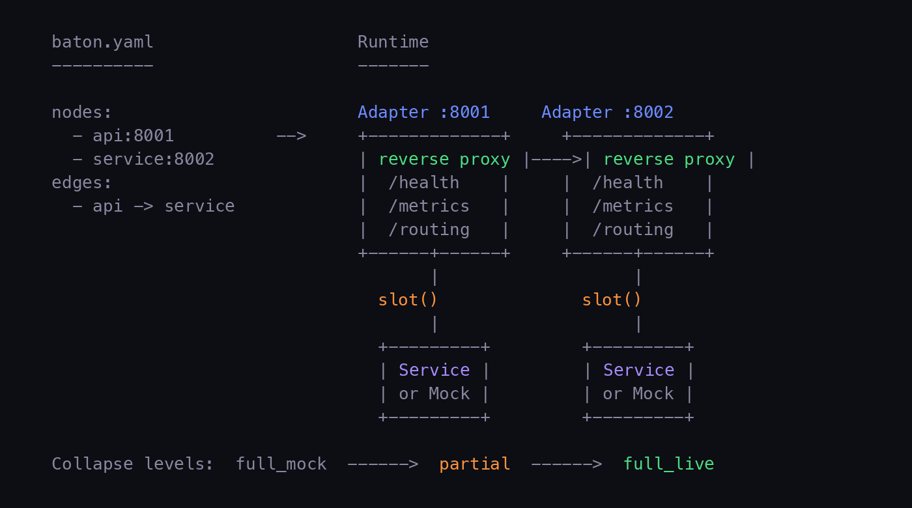

Pre-wired topologies with smart adapters, mock collapse, A/B routing, taint analysis, trust-aware validation, and self-healing. Define the board. Slot services in.
pip install baton-orchestrator
Topology is a first-class artifact. Define nodes, edges, and contracts in baton.yaml. Services slot in and out of a fixed board.
Every node gets an async reverse proxy. Health checks, metrics, hot-swap with drain, and per-request routing -- all built in.
HTTP, TCP, gRPC, protobuf, and SOAP out of the box. Extensible ProtocolHandler registry for custom protocols.
Auto-generate mock servers from OpenAPI specs. Start fully mocked, slot in services one at a time, collapse back when done.
Weighted splits, canary rollouts, header-based routing. Config locking prevents accidental overrides during tests.
Automated canary evaluation with error rate and latency thresholds. Promotes through weight steps or rolls back.
Replace running services with zero downtime. Drain connections from old instance, start new, switch. Atomic and safe.
Custodian monitors health every 5 seconds. Auto-restarts failed services, replaces with mocks, escalates when repairs fail.
Live dashboard, per-node metrics, request signals, per-path statistics. Prometheus export. JSONL persistence for offline analysis.
Multi-cluster heartbeat, cross-cluster state sync, automatic failover and restore. Pull-based peer discovery with configurable thresholds.
Monitor TLS certificate expiry with warning and critical thresholds. Auto-rotate certs with zero downtime -- new connections get the new cert.
Model Context Protocol server exposes circuit state to Claude Code and other AI assistants. Inspect topology, metrics, and signals.
Auto-detect Python or Node runtimes, generate Dockerfiles, build and push container images. Integrated into deploy pipeline.
Deploy to GCP Cloud Run with --build. Each node becomes a service. Edges auto-wired via environment variables.
Command injection prevention, header injection guards, path traversal protection, fail-closed auth, bounded header parsing.
Seed PII-shaped canary data with traceable fingerprints. Detect when data crosses boundaries it shouldn't -- in traffic, logs, and spans.
Services are validated against OpenAPI contracts at slot time. Incompatible services are rejected before receiving traffic.
Trust scoring, declaration gap analysis, classification tagging on spans, fire-and-forget OTLP forwarding. All optional, gracefully degrading.
Captures service stdout/stderr with automatic severity parsing. Structured logs with node attribution, persisted for audit trails.
Sync egress nodes from Ledger, field masking at the adapter layer, Ledger-sourced mock records for canary testing.
Generate baton.yaml from Constrain's component_map.yaml with data access declarations, authority domains, and edge tiers.
Hand-written unit tests, integration tests, functional assertions, plus pact-generated smoke tests covering all source modules.
Define your topology, boot with mocks, slot in real services, run A/B tests, federate across clusters.

| Mode | Description | Health Check |
|---|---|---|
http |
HTTP/1.1 reverse proxy with tracing, circuit breaker, retries | HTTP GET to health path |
tcp |
Bidirectional byte pipe | TCP connectivity |
grpc |
Transparent HTTP/2 forwarding | TCP connectivity |
protobuf |
Length-prefixed binary proxy (4-byte big-endian + payload) | TCP connectivity |
soap |
HTTP with SOAPAction header awareness and fault detection | HTTP + SOAP fault check |
The board. Nodes + edges + contracts. Defined in baton.yaml.
Async reverse proxy at each node. Handles routing, health, metrics.
Insert or replace a service. Hot-swap drains before switching.
Compress circuit. Full mock through partial to full live.
Health monitor. Restart, replace, escalate. Self-heals the board.
Weighted, header, canary. Per-request. Lockable.
Pluggable handlers. HTTP, TCP, gRPC, protobuf, SOAP. Extensible.
Multi-cluster heartbeat, state sync, automatic failover.
Deployment backend. Local processes or GCP Cloud Run.
Service self-description. API spec, mocks, dependencies.
Entry point from outside the circuit. First node traffic hits.
External dependency. Always mocked. Third-party APIs, databases.
Live UI. Node cards, bar charts, signal log, topology. Polls every 2s.
Auto-promote or rollback. Compares error rate + latency against thresholds.
TLS cert monitoring, expiry alerts, zero-downtime rotation.
AI integration. Exposes circuit state to Claude Code and other assistants.
Canary data with fingerprints. Detects boundary violations in traffic and logs.
Trust scores, declaration gaps, classification tagging. Optional integration.
Generate baton.yaml from component_map.yaml. Data access declarations.
Egress node sync, field masking at adapter, Ledger-sourced mock records.
Seed PII-shaped synthetic data with embedded fingerprints across the circuit and detect when data crosses boundaries it shouldn't.
Each canary datum (SSN, email, credit card, phone, name) is scoped to a node and its topological neighbors. The taint scanner inspects adapter traffic and service logs in real time. If a canary SSN seeded into user-api appears in a response from analytics, that is a TaintViolation.
Opt-in via taint.enabled: true in baton.yaml. Canary data stored in .baton/taint_canaries.jsonl, violations in .baton/taint_violations.jsonl.
Trust-aware slot validation, classification tagging on spans, and fire-and-forget OTLP forwarding. All optional and gracefully degrading.
Trust validation -- baton slot checks trust score before accepting. Low-trust authoritative nodes require --force.
Declaration gaps -- compares declared data access against Arbiter's observations.
Classification tagging -- reads x-data-classification from OpenAPI specs, adds baton.request.classifications span attributes.
Span forwarding -- fire-and-forget forwarding to Arbiter's OTLP endpoint with drop rate tracking.
If Arbiter is unreachable, the circuit runs normally. All Arbiter calls use 2s timeout and degrade gracefully.
Sync egress nodes from Ledger, apply field masking at the adapter layer, and use Ledger-sourced mock records for canary testing.
Field masking -- adapter applies field masks to JSON response bodies before forwarding. Encrypted-at-rest fields are replaced with [ENCRYPTED].
Egress sync -- baton sync-ledger fetches egress node configs from Ledger's API.
Mock records -- --ledger-mocks uses Ledger-generated mock records for more realistic canary testing.
Version 2 config adds data_access, authority, and openapi_spec on nodes, data_tiers_in_flight on edges, plus arbiter, ledger, and taint sections. Version 1 configs load without modification.
Full CLI reference. All commands use baton as the entry point.
The custodian monitors adapter health via TCP probes every 5 seconds with a three-stage escalation.
3 consecutive failures -- restart the service process.
6 consecutive failures -- replace with mock (503).
Still failing -- mark faulted, log for manual intervention.
When a service recovers, the custodian automatically resets its status. Two-phase repair (research-backed): fault classification and recovery selection are orthogonal decisions.